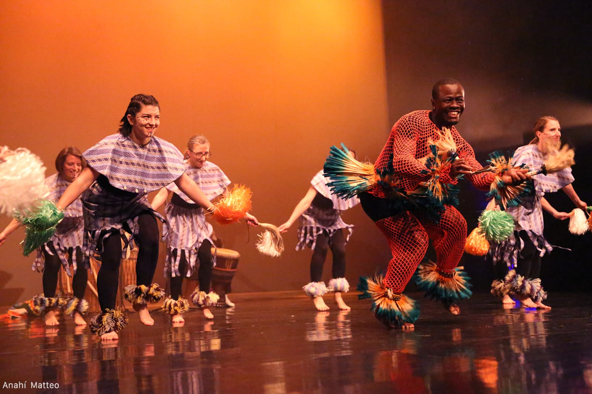

💃 DANSE AFRICAINE
NOUVEAU !
Découvrez les rythmes et mouvements de la danse africaine traditionnelle

Description
Découvrez les rythmes et les mouvements de la danse africaine traditionnelle. Une activité énergique qui allie expression corporelle, musique et culture dans une ambiance joyeuse et conviviale.
👥 Public
Enfants (jusqu'à 12 ans) et Adultes
🕒 Horaires
Vendredi (1 cours sur 2)
- Enfants : 17h15 à 18h15
- Adultes : 19h30 à 21h00
📍 Lieu
Salle Pierre Combettes (HAUT)
💰 Tarifs
Cotisation annuelle :
- Enfants : 111 € + adhésion (10 €)
- Adultes : 135 € + adhésion (15 €)
Démarrage
12 septembre 2025
Contact
Animateur :
Salem BLE
Référente Foyer Rural :
Karine JACQUET
📞 06 88 49 59 41
🥁 Particularité
Cours accompagné de percussions traditionnelles pour une immersion complète dans la culture africaine.